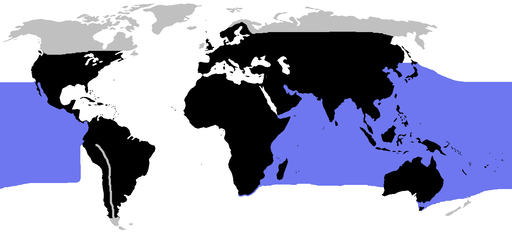

Lebensort
Schlangen Leben an verschiedenen Orten im Wasser Süß- und Salzwasser, Wüste, Berge
und auf Bäumen.
Der ort wo sie leben hat auch viel mit der Lebensart zu tun und Fortbewegung.
In der Wüste bewegen sie sich zuteil Seitenwinden voran um wenig mit dem Heissen Boden in berürung zu kommen
Sie leben fast überall ausser in Extrem kalten Gegenden(Nord- und Südpol)
Einige von ihnen leben sogar in der Schweiz
 Alles Blau und Schwarz markierte Bereich ist wo schlangen überal Leben